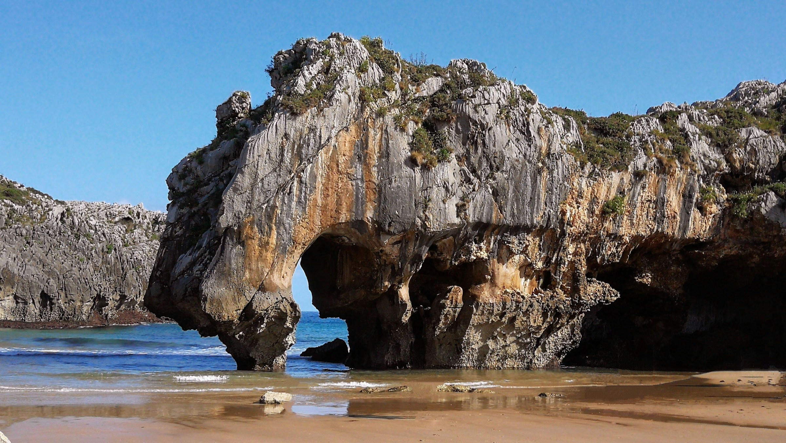
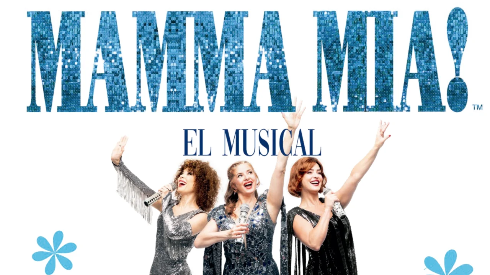
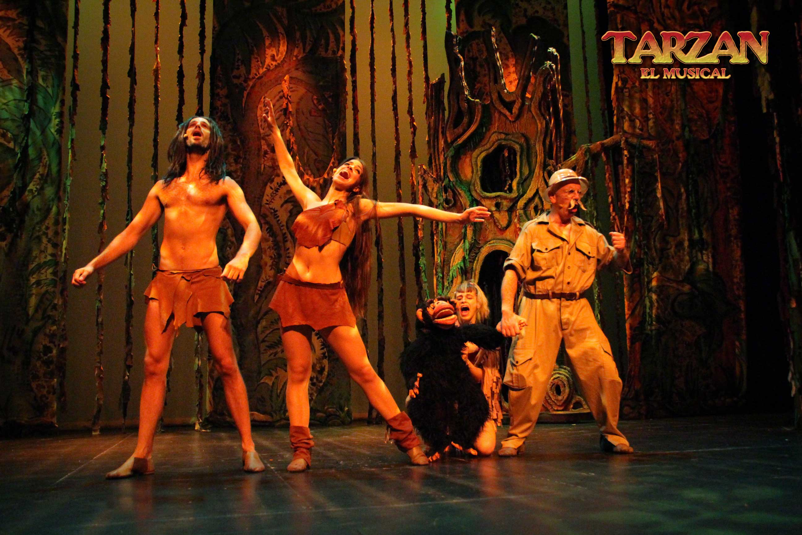

Vive la magia cultural
Un recorrido visual por los eventos más emocionantes que Asturias tiene para ofrecer
Asturias en vídeo
Descubre la belleza natural y cultural del Paraíso Natural
- 500+ Conciertos
- 300+ Obras
- 200+ Exposiciones
- 350+ Festivales
Galería Cultural
Momentos únicos de la cultura asturiana
-

-

-

-

-

-

El Paraíso Natural
Asturias es mucho más que un destino: es un territorio vivo, lleno de cultura y creatividad.
Sus festivales de música, sus teatros centenarios, sus museos y sus cines forman parte del alma de una región única en el norte de España.
Desde los prados de Llanera hasta el bullicio de Gijón y Avilés, Happiness & Co recoge lo mejor de la escena cultural asturiana.